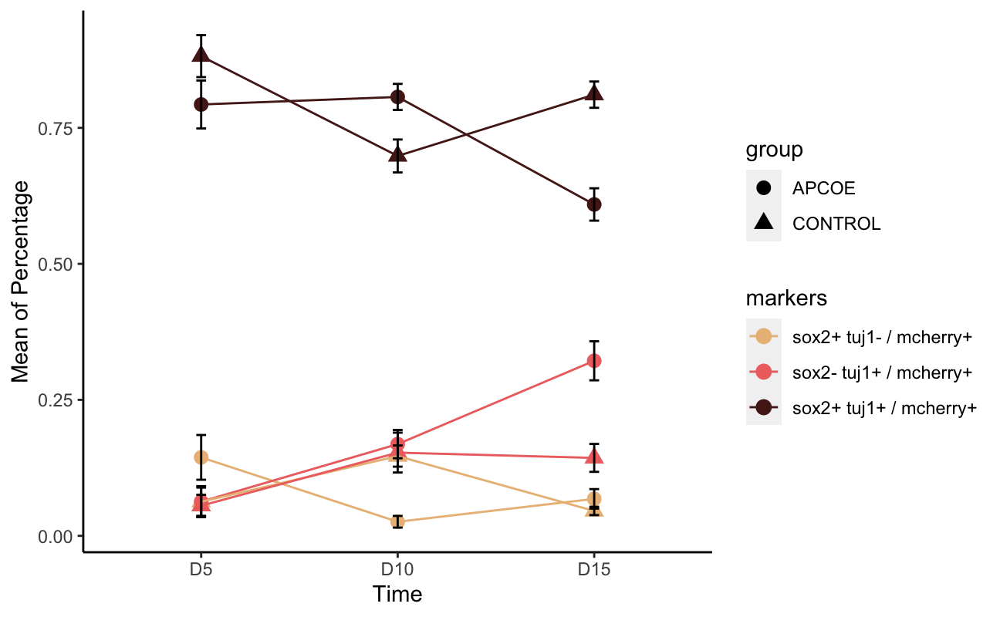
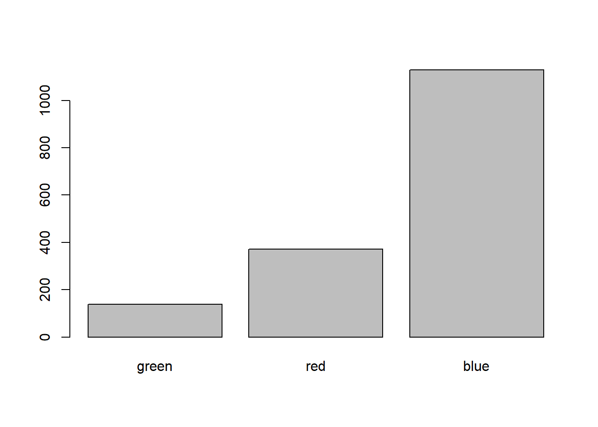

一、离散坐标轴的排序
ggplot2中，x轴的排序有一定规则：
如果是factor类型，则使用factor的level属性作为排序依据 如果是character类型，则按照字母顺序
1、将数据类型变成factor
我们想要自定义顺序，要设置为factor类型，使用levels来定义顺序；
例如：
1 | data_percentage$time = factor(data_percentage$time,levels = c("D5","D10","D15")) |

2、按（其他数值变量）统计量值排序
除了手动设置levels，可以根据不同因子水平分成的组中另一数值型变量的统计量值排序
例如使用forcats::fct_reorder()
1 | set.seed(1) |

3、特定几个水平置于最前
如果又想将特定的一个或几个水平次序放到因子水平最前面，使用forcats::fct_relevel()
1 | levels(fac) |
fct_relevel()第一个参数是要修改次序的因子，
后续可以有多个字符型参数表示要提前的水平。
4、不转换成factor，直接进行排序（可以根据其他数值变量）
需要按照频率、数量大小进行排序，实现方式为reorder( , )
如下：
1 | pic + geom_col(aes(x = reorder(motif,-number),y=number,fill=m6A_site)) |
三、离散坐标轴的子集选择与合并
1、子集选择
在ggplot2中使用scale_x_discrete(limits= c[,])可以快速取子集
2、因子合并
如果坐标轴映射的变量为因子型，forcats::fct_recode()可以修改每个水平的名称，允许多个旧水平对应到一个新水平，
从而合并原来的水平。 如：
1 | fac4 <- fct_recode( |
如果合并很多， 可以用fct_collapse()函数， 如
1 | compf <- fct_collapse( |
forcats::fct_lump(f)：
如果某个因子频数少的水平很多， 在统计时有过多水平不易展示主要的类别，
可以用forcats::fct_lump(f)合并，
缺省地从最少的类合并一直到“其它”类超过其它最小的类之前，
可以用n=参数指定要保留多少个类。